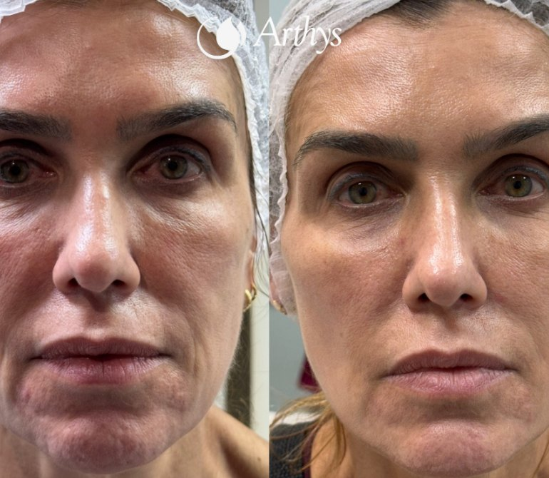
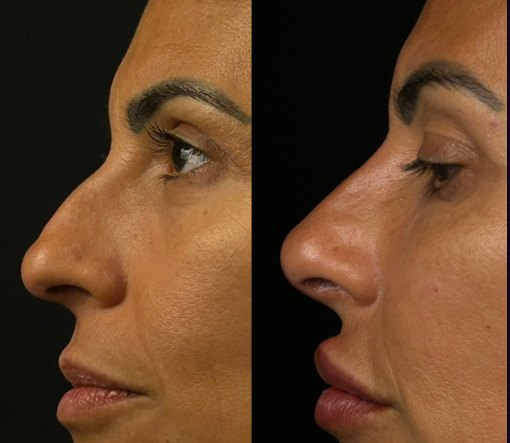
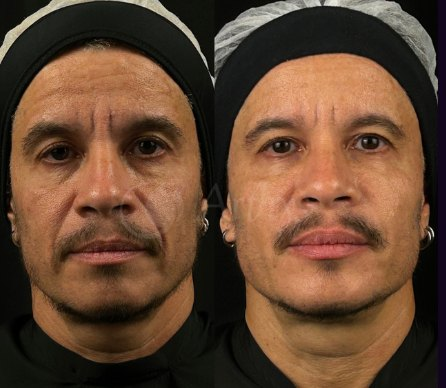
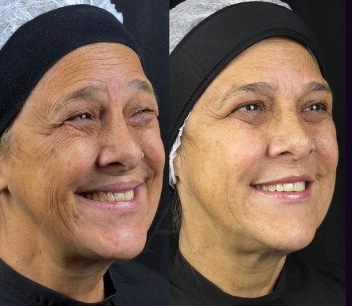

Leitura Facial
Anatomia, processo de envelhecimento e ligamentos retentores: entender a face antes de intervir.
Formação presencial
Aprenda a ler a face camada a camada e a decidir antes de aplicar.
O curso
Aprenda harmonização facial do básico ao avançado, entendendo a face em camadas e construindo resultados mais completos e naturais.
Ao longo do curso vai integrar toxina botulínica, preenchimento, bioestimuladores e fios de PDO (lisos, multifilamentares e parafusos), desenvolvendo raciocínio clínico, leitura facial e tomada de decisão estratégica. Não apenas execução de técnicas.
Sai com uma base sólida e evolui para abordagens mais avançadas.
A abordagem
Anatomia, processo de envelhecimento e ligamentos retentores: entender a face antes de intervir.
Associação de terapias e estratificação anatómica: a técnica certa, na camada certa.
Avaliação e anamnese personalizadas para decidir com critério, caso a caso.
Resultados
Casos clínicos do Dr. Gabriel Machado.

Antes Depois
Antes Depois
Antes Depois
Antes DepoisImagens cedidas pelo Instituto Dr. Gabriel Machado · Clínica Arthys. Os resultados variam conforme a avaliação, o planeamento e a resposta individual de cada paciente.
O formador
A idealizadora
Belinha Cardoso
Fundadora e CEO da BeLuxClinic · Lisboa
20+ anos no setor da estética
Empresária, formadora, palestrante e mentora, Belinha Cardoso é uma referência no desenvolvimento de profissionais e negócios nas áreas da estética, saúde, beleza e bem-estar.
À frente da BeLuxClinic, construiu a sua carreira através de uma visão que une conhecimento técnico, atendimento humanizado, experiência do cliente e posicionamento profissional.
Através da BeLuxClinic e da BeLux Academy, promove projetos que aproximam profissionais, mercados e conhecimento entre Portugal e Brasil.
“Mais do que ensinar técnicas, o objetivo é criar experiências que acrescentem conhecimento, elevem profissionais e deixem uma marca positiva no mercado.”
Belinha Cardoso
Conteúdo programático
O formato
Dia 01
Dia 02
Datas
Duas edições, o mesmo programa completo de 20 horas. As vagas são limitadas pela componente prática. Fale connosco para saber a disponibilidade e as condições.
Edição 01
Lisboa
13 e 14 Outubro
Quero participarEdição 02
Porto
15 e 16 Outubro
Quero participarInscrição
Fale com a organização para saber a disponibilidade de vagas, o valor e as condições de pagamento.
Fale diretamente com a organização através do WhatsApp.
FAQ
Ficou alguma dúvida de fora?
A organização responde diretamente, com a disponibilidade de vagas de cada cidade.
Falar com a organizaçãoDois dias. O primeiro é de teoria e o segundo de prática.
20 horas no total: 10 horas de teoria no primeiro dia e 10 horas de prática no segundo.
O valor, as condições de pagamento e a disponibilidade de vagas são apresentados pela organização no WhatsApp: +351 969 290 136.
Toxina botulínica full face, preenchimento com ácido hialurónico, bioestimuladores e fios de PDO lisos, parafusos e multifilamentares.
Em Lisboa, a 13 e 14 de outubro, e no Porto, a 15 e 16 de outubro. Os locais são comunicados pela organização após a inscrição.
Através do WhatsApp da organização: +351 969 290 136.